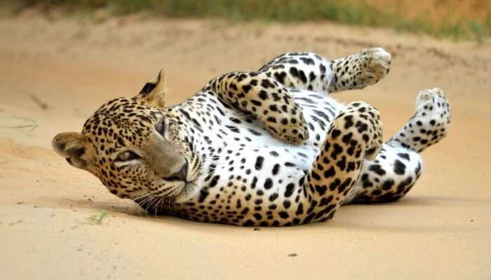

Galle Fort (Galle District)

Galle Fort in the Bay of Galle on the southwest coast of Sri Lanka, was built first in 1588 by the Portuguese, then extensively fortified by the Dutch during the 17th century from 1649 onwards. It is a historical, archaeological and architectural heritage monument, which even after more than 432 years maintains a polished appearance, due to extensive reconstruction work done by Archaeological Department of Sri Lanka. The fort has a colourful history, and today has a multi-ethnic and multi-religious population. The Sri Lankan government and many Dutch people who still own some of the properties inside the fort are looking at making this one of the modern wonders of the world.[4][5] The heritage value of the fort has been recognized by the UNESCO and the site has been inscribed as a cultural heritage UNESCO World Heritage Site under criteria iv, for its unique exposition of "an urban ensemble which illustrates the interaction of European architecture and South Asian traditions from the 16th to the 19th centuries."[3] The Galle Fort, also known as the Dutch Fort or the "Ramparts of Galle", withstood the Boxing Day tsunami which damaged part of coastal area Galle town. It has been since restored
Yala National Park (Hambanthota District)
Yala National Park is the most visited and second largest national park in Sri Lanka, bordering the Indian Ocean. The park consists of five blocks, two of which are now open to the public, and also adjoining parks. The blocks have individual names such as, Ruhuna National Park (Block 1), and Kumana National Park or 'Yala East' for the adjoining area. It is situated in the southeast region of the country, and lies in Southern Province and Uva Province. The park covers 979 square kilometres (378 sq mi) and is located about 300 kilometres (190 mi) from Colombo. Yala was designated as a wildlife sanctuary in 1900, and, along with Wilpattu was one of the first two national parks in Sri Lanka, having been designated in 1938. The park is best known for its variety of wild animals. It is important for the conservation of Sri Lankan elephants, Sri Lankan leopards and aquatic birds. There are six national parks and three wildlife sanctuaries in the vicinity of Yala
Mahapelessa Hot Springs (Hambanthota District)

If you are looking for those places to visit in Hambantota district where you can sit back and relax, then this is it! It is because one of the unique experiences of taking bath in a hot spring is provided here. This place attracts several locals and tourists on a regular basis. There are 7 hot water tanks with 7 different water temperatures so one can choose from which to take bath according to their comfort. There is also a small park for kids and a place with animals- like rabbits, turkey, hens and fishes.
Dondra Head LightHouse (Matara District)
Dondra Head Lighthouse is a lighthouse located on Dondra Head, Dondra, the southernmost point in Sri Lanka and is Sri Lanka's tallest lighthouse,[1] and also one of the tallest in South East Asia. Dondra Head lighthouse is operated and maintained by the Sri Lanka Ports Authority. he lighthouse is 49 m (161 ft) high[3] and contains 7 floors, 14 two panel yellow colour windows and 196 steps to the top. Dondra Head is also one of four international lighthouse in Sri Lanka. It was modernized in 2000, with the introduction of a Differential Global Positioning System and is computer linked to the other major lighthouses around the coast The lighthouse is near the village of Dondra, and is approximately 6 km (3.7 mi) southeast of Matara. The name Dondra is a synonym for "Devi-Nuwara" in the local Sinhala language, "Devi" meaning "Gods" and "Nuwara" meaning "City". Dondra is therefore derived to mean "City of the Gods".